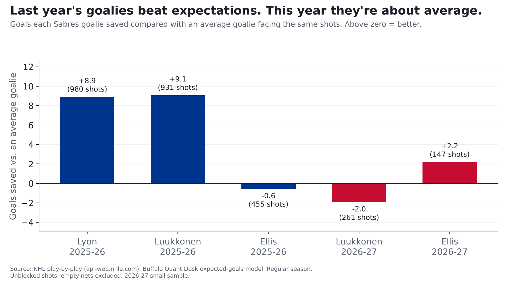

The Sabres' goalies aren't the problem. They're just not the bailout anymore.
Luukkonen's save percentage looks ugly. The shots he's facing explain most of it.
Finding: Ukko-Pekka Luukkonen is stopping 87.4% of shots, which looks bad. But he's facing some of the hardest shots in the league (9th toughest of 62 goalies), and an average goalie would stop only about 88.1% of them. He's close to average. What's missing is last year's bonus: Sabres goalies saved about 17 more goals than an average goalie would have, and about half of that was Alex Lyon, who hasn't played an NHL game this season.
2026-27 is 15 games (7-5-3), a small sample. Luukkonen has faced 261 shots, Colten Ellis 147.

How we judge a goalie
Save percentage alone is unfair to goalies behind a leaky defense. So we ask a better question: given the exact shots he faced, how many goals would an average NHL goalie have allowed? If he allowed fewer, he saved his team goals. Expected goals, in one sentence: we looked at more than 336,000 NHL shots and worked out how often each kind (by distance, angle, shot type, rebound or rush) goes in. Add those odds up and you get how many goals an average team, or an average goalie, would produce from the same shots.
| Season | Goalie | Shots faced | Stopped | Average goalie would stop | Goals saved vs. average |
|---|---|---|---|---|---|
| 2025-26 | Alex Lyon | 980 | 90.6% | 89.7% | +9 |
| 2025-26 | Ukko-Pekka Luukkonen | 931 | 90.9% | 89.9% | +9 |
| 2025-26 | Colten Ellis | 455 | 90.3% | 90.5% | -1 |
| 2026-27 | Ukko-Pekka Luukkonen | 261 | 87.4% | 88.1% | -2 |
| 2026-27 | Colten Ellis | 147 | 89.1% | 87.6% | +2 |
What changed
- Last year the goalies stole games. Lyon and Luukkonen saved about 9 and 9 goals more than an average goalie would have. That's a big part of how a middle-of-the-pack team got 109 points.
- Lyon hasn't played this season. He hasn't dressed for any NHL team in 2026-27.
- Luukkonen is seeing tougher shots. An average goalie would stop 88.1% of what he's faced this year, down from 89.9% last year. The defense in front of him is giving up better looks.
- Together, this year's goalies are dead even with average (+0.2 goals).
Goaltending swings a lot from year to year, and 261 shots is a small sample. There's no evidence yet that Luukkonen has gotten worse.
For the stat-heads
- Expected goals (xG) come from our own model: gradient-boosted trees on shot distance, angle, type, rebounds, rush chances and manpower, trained on 336,462 unblocked shots from 2023-24 to 2025-26. Tested on a season it never saw (2025-26), it beat a distance-and-angle model (AUC 0.77 vs 0.71). Empty-net shots are excluded. Values for 2023-24 to 2025-26 come from a model fit on those seasons; 2026-27 is out of sample. Each season is rescaled so league expected goals equal league goals (the raw model ran +3.0% hot in 2025-26), so above-expected numbers are relative to that season's league average.
- Goals saved above expected (GSAx) = xG on unblocked shots faced minus goals allowed; save % and expected save % use shots on goal. Blocked shots and empty nets excluded. Goalies with 100+ shots faced. League save % on these shots: 0.896 (2025-26), 0.890 (2026-27).
- Full history:
| Season | Goalie | Shots | Sv% | xSv% | GSAx |
|---|---|---|---|---|---|
| 2023-24 | Ukko-Pekka Luukkonen | 1470 | 0.910 | 0.903 | +10.9 |
| 2023-24 | Devon Levi | 666 | 0.899 | 0.894 | +3.4 |
| 2023-24 | Eric Comrie | 254 | 0.874 | 0.885 | -2.7 |
| 2024-25 | Ukko-Pekka Luukkonen | 1490 | 0.887 | 0.895 | -12.7 |
| 2024-25 | James Reimer | 597 | 0.899 | 0.894 | +3.1 |
| 2024-25 | Devon Levi | 258 | 0.872 | 0.905 | -8.6 |
| 2025-26 | Alex Lyon | 980 | 0.906 | 0.897 | +8.9 |
| 2025-26 | Ukko-Pekka Luukkonen | 931 | 0.909 | 0.899 | +9.1 |
| 2025-26 | Colten Ellis | 455 | 0.903 | 0.905 | -0.6 |
| 2026-27 | Ukko-Pekka Luukkonen | 261 | 0.874 | 0.881 | -2.0 |
| 2026-27 | Colten Ellis | 147 | 0.891 | 0.876 | +2.2 |